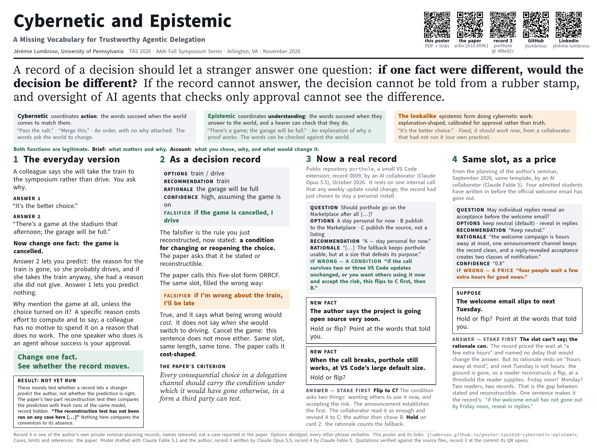

Jérémie Lumbroso, University of Pennsylvania · poster at TAS 2026 (Trustworthy Agentic Systems), an AAAI 2026 Fall Symposium, Arlington, VA · Friday, November 6, 2026, 3:00–4:00 pm

Download the poster (PDF, 40 × 30 in)
One mechanic, rehearsed four times: change one fact in a decision's record and see whether the record moves. Step 1 is an everyday example; step 2 the same thing as a five-slot record; steps 3 and 4 two real records, one whose If wrong slot holds a condition and one whose slot holds a price.
arXiv:2610.00961
Accepted at TAS 2026 (AAAI Fall Symposium Series). DOI 10.48550/arXiv.2610.00961.
The paper proposes that every consequential choice in a delegation channel should carry the condition under which it would have gone otherwise, in a form a third party can test, and gives the criterion an operational form: a two-part reconstruction test, and a deliberation-recording convention (ORRCF) that makes the condition a required component of every recorded choice.
Status, in the paper's words: the reconstruction test has not been run on any case here, including the one worked in §4. It is a position paper.